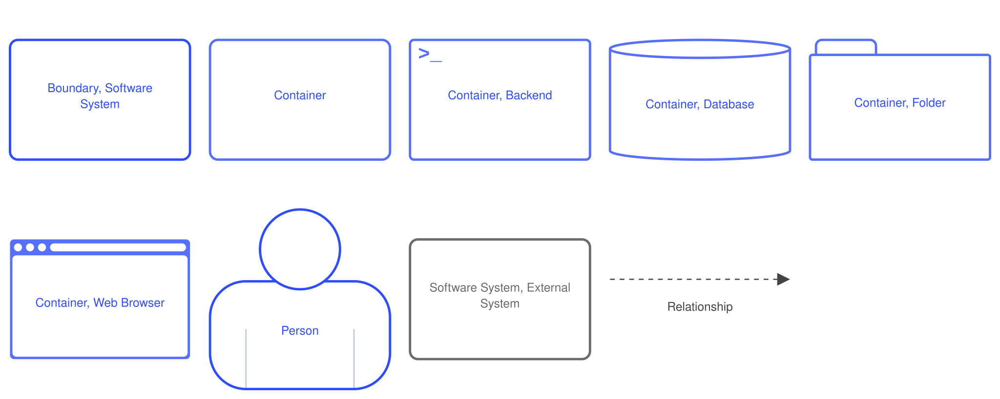
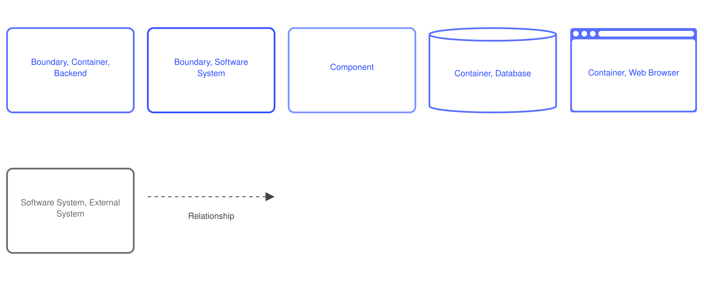
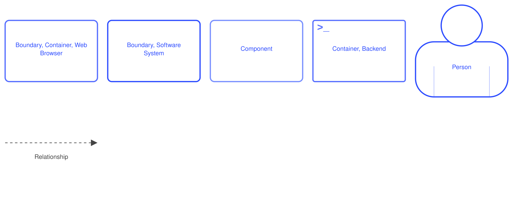
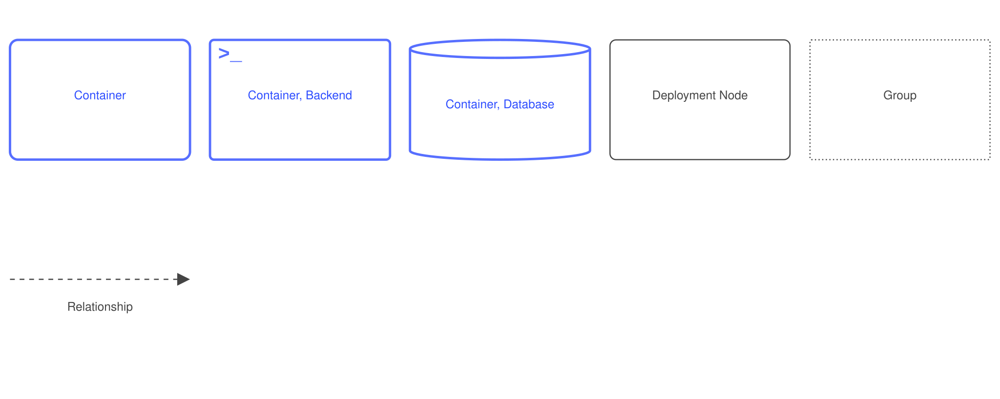
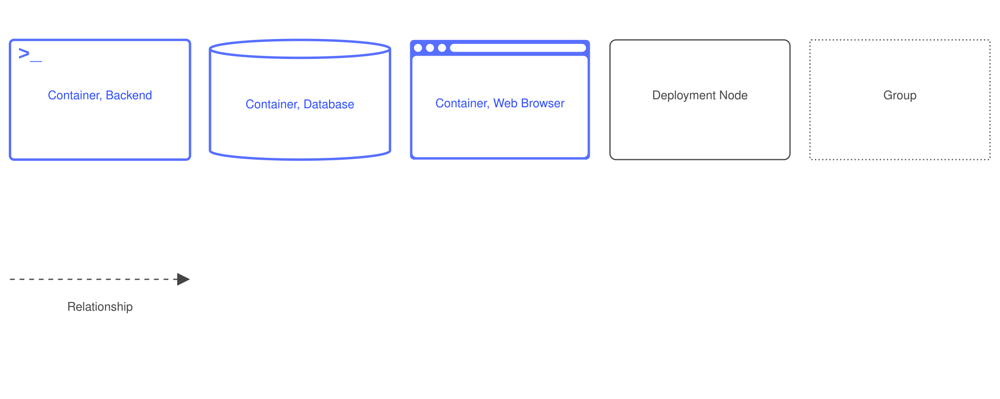
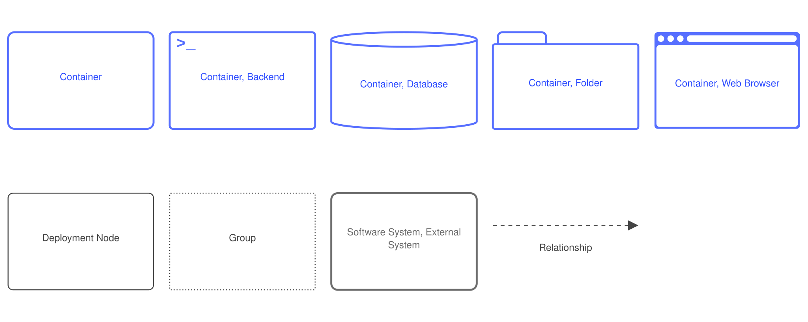

Especificação de Arquitetura de Software
Mantenedores: Gustavo Henrique, Kauan Cardoso, Sophya Ribeiro, Brenno, Catarina, Eduardo
Histórico de Alterações
| Versão | Data | Justificativa | Responsável |
|---|---|---|---|
| 1.0 | 18/03/2026 | Criação do documento. | Fabio Ramos |
| 2.0 | 19/03/2026 | Atualização para a implantação em homologação. | Fabio Ramos |
| 2.1 | 23/03/2026 | Ajuste das referências à ferramenta Structurizr, corrigindo a digitação. | Lucas Gonçalves Cordeiro |
| 2.2 | 24/03/2026 | Substituição das imagens renderizadas de PNG para SVG. | Fabio Ramos |
| 2.3 | 26/03/2026 | Renomeação do documento para seguir o padrão definido em GCS. | Fabio Ramos |
| 3.0 | 11/05/2026 | Atualização da arquitetura e criação dos diagramas de implantação. | Lucas Gonçalves Cordeiro |
| 3.1 | 10/06/2026 | Inclusão do histórico de versões, de acordo com o histórico de commits. | Lucas Gonçalves Cordeiro |
| 3.2 | 18/10/2026 | Migração do documento do repositório de documentação descontinuado para o MkDocs, com os diagramas de implantação na seção 3.5. | Sophya Ribeiro |
Sumário¶
1. Introdução¶
Este documento tem como objetivo descrever a arquitetura do sistema NotificaSaúde, seguindo o modelo de visualização arquitetural de software C4 (BROWN, s.d.).
O modelo C4 foi escolhido pela equipe por oferecer uma forma progressiva e hierárquica de comunicar a arquitetura do sistema, partindo de uma visão de alto nível compreensível por todos os stakeholders — incluindo os proponentes e a equipe de saúde — até o detalhamento técnico dos componentes internos necessário para o desenvolvimento. Essa abordagem facilita tanto as revisões com os proponentes quanto a integração de novos membros à equipe, sem exigir familiaridade prévia com notações mais complexas como UML estrutural. Além disso, a notação C4 é diretamente suportada pela ferramenta Structurizr DSL, utilizada pela equipe para manter os diagramas versionados junto ao projeto.
Referência: BROWN, Simon. The C4 model for visualising software architecture – Context, Containers, Components, and Code. Disponível em: https://c4model.com/.
2. Escopo¶
Este documento auxilia os envolvidos no projeto a compreender os aspectos arquiteturais do sistema necessários para desenvolver uma solução que atenda às necessidades dos proponentes, além de auxiliar equipes futuras no entendimento do projeto.
2.1. Restrições do sistema¶
As seguintes decisões e restrições arquiteturais foram definidas e registradas como ADRs (Architecture Decision Records):
React + TypeScript no frontend (ADR-0005): A interface web do NotificaSaúde é desenvolvida em React com TypeScript. A escolha considera a necessidade de formulários acessíveis e intuitivos para diferentes perfis de usuário, a reutilização de componentes e a segurança de manutenção proporcionada pela tipagem estática.
Arquitetura cliente-servidor com API REST (ADR-0006): O sistema adota uma arquitetura cliente-servidor, com frontend e backend como aplicações independentes em repositórios separados, comunicando-se via API REST com autenticação JWT. Essa decisão substituiu a abordagem monolítica inicialmente considerada, favorecendo a separação de responsabilidades e o desenvolvimento paralelo entre as equipes.
Arquitetura centralizada com isolamento lógico (ADR-0008): O NotificaSaúde opera como um sistema único e compartilhado entre todas as unidades de saúde, com base de dados centralizada e controle de acesso por unidade, setor e perfil de usuário (RBAC). Essa decisão viabiliza a visão consolidada dos incidentes, relatórios macro e governança centralizada, em contraposição ao modelo descentralizado, que dificultaria a consolidação de dados.
Multi-tenancy com tenant_id e PostgreSQL (ADR-0009): O isolamento lógico entre unidades de saúde é implementado por meio de uma coluna tenant_id presente em todas as entidades de domínio. O PostgreSQL foi adotado como banco de dados em substituição ao SQLite, que não atende aos requisitos de concorrência, controle de acesso e alta disponibilidade do ambiente institucional (RF-5.1.1).
Express.js com TypeScript no backend (ADR-0010): O backend é implementado com Express.js e TypeScript, organizado em camadas explícitas (routes/, services/, repositories/). A escolha equilibra simplicidade operacional, alinhamento com o ecossistema TypeScript do frontend e controle suficiente para implementar RBAC, multi-tenancy e auditoria.
Prisma como ORM (ADR-0011): O Prisma é adotado como camada de acesso a dados, com o schema.prisma como fonte única de verdade do modelo de dados. Migrações versionadas e tipos TypeScript gerados automaticamente reduzem erros de mapeamento e facilitam a evolução do schema ao longo do piloto.
3. Representação arquitetural¶
O modelo C4 considera as estruturas estáticas de um sistema de software em termos de containers (aplicativos, armazenamentos de dados, microsserviços etc.), componentes e código. Também considera as pessoas que usam os sistemas de software construídos.
3.1. Nível 1 – Diagrama de Contexto¶
O diagrama de contexto apresenta o NotificaSaúde e sua relação com os cinco perfis de usuário e o sistema externo NOTIVISA, da ANVISA. É importante destacar que o Notificante — que pode ser qualquer pessoa com conhecimento do incidente, incluindo pacientes e acompanhantes — acessa o formulário de registro sem necessidade de autenticação, conforme exigido pela RN-03 e pela RN-04. Os demais atores (Profissional NSP, Gestor de Área, Administrador da Instituição e Administrador do Sistema) acessam o sistema mediante autenticação por login e senha (RN-01). A integração com o NOTIVISA está prevista como evolução futura do sistema.
Clique no diagrama para abrir em tamanho real. Diagrama gerado com Structurizr DSL. Arquivo fonte:
structurizr/workspace.dsl, na raiz deste repositório.
3.2. Nível 2 – Diagrama de Container¶
O diagrama de container detalha os três containers que compõem o NotificaSaúde, conforme as decisões arquiteturais registradas nas ADRs:
- Aplicação Web (Frontend): SPA desenvolvida em React + TypeScript (ADR-0005), responsável pela interface responsiva para todos os perfis de usuário. Inclui o formulário público de notificação de incidentes, o painel do NSP, o painel do Gestor de Área, o painel administrativo e as telas de relatórios. Compatível com Chrome, Safari e Microsoft Edge (RF-5.4.1).
- API Backend: Aplicação Node.js com Express.js e TypeScript (ADR-0010), exposta como API REST (ADR-0006). Implementa RBAC por perfil de usuário (RN-01), isolamento multi-tenant por
tenant_id(ADR-0009) e auditoria completa de modificações (RN-02). Mantém rotas públicas para o registro de notificações, que não exigem autenticação (RN-03, RN-04), separadas das rotas protegidas por JWT. - Banco de Dados: Instância PostgreSQL 16 (ADR-0009), com isolamento lógico entre unidades de saúde garantido por
tenant_ide índices compostos(tenantId, id)em todas as tabelas de domínio.
A comunicação entre o Frontend e a API Backend ocorre exclusivamente via HTTPS com JSON. Requisições ao formulário público não carregam token; requisições às demais rotas carregam Authorization: Bearer <JWT>. O acesso ao banco de dados é mediado exclusivamente pelo Prisma ORM (ADR-0011).

Clique no diagrama para abrir em tamanho real. Diagrama gerado com Structurizr DSL. Arquivo fonte:
structurizr/workspace.dsl, na raiz deste repositório.
3.3. Nível 3 – Diagrama de Componentes¶
O diagrama de componentes detalha a organização interna do container API Backend, seguindo a estrutura de camadas definida na ADR-0010. Os componentes estão organizados em cinco grupos:
Middlewares: Implementam as preocupações transversais de segurança. O publicGateway é o ponto de entrada para rotas públicas — sem autenticação —, aplicando apenas rate limiting e validação de schema via Zod (RN-03, RN-04). O authMiddleware valida o JWT Bearer e popula o contexto da requisição com os dados do usuário. O tenantMiddleware injeta o tenant_id no ciclo da requisição, garantindo que nenhuma operação de domínio prossiga sem o contexto do tenant resolvido (ADR-0009). O rbacMiddleware valida o perfil do usuário contra os perfis autorizados para cada rota (RN-01). O errorHandler padroniza todas as respostas de erro.
Routes: Responsabilidade única de receber a requisição HTTP, acionar o serviço correspondente e devolver a resposta. Nenhuma regra de negócio reside nessa camada. A rota public/notificacao.routes (POST /public/notificacoes) é a única rota sem autenticação obrigatória, em conformidade com os requisitos de notificação anônima (RN-04, US-1.1).
Services: Contêm todas as regras de negócio do sistema. Cada service é responsável por um agregado do domínio e orquestra as transições de estado, as validações de pré-condição e as chamadas ao AuditService após qualquer modificação (RN-02). O NotificacaoService gerencia o ciclo de vida completo da notificação, incluindo a criação pública sem identificação obrigatória do notificante. O CampoFormularioService gerencia o formulário dinâmico em escopo global, sem tenant_id, acessível apenas ao Administrador do Sistema.
Repositories: Camada de acesso a dados. Todos os repositórios concretos estendem a TenantRepository, classe base abstrata que injeta automaticamente o tenant_id em toda query de domínio (ADR-0009). A única exceção é o CampoFormularioRepository, que opera sem filtro de tenant_id por design — os campos do formulário são globais a todas as unidades.
Camada Prisma: O PrismaClient (instância singleton) é a única interface com o PostgreSQL. O schema.prisma é a fonte única de verdade do modelo de dados, com tenant_id e índice composto @@index([tenantId, id]) em todas as entidades de domínio.

O diagrama abaixo apresenta a organização interna do container Aplicação Web (Frontend).

Clique no diagrama para abrir em tamanho real. Diagrama gerado com Structurizr DSL. Arquivo fonte:
structurizr/workspace.dsl, na raiz deste repositório.
3.4. Nível 4 – Código¶
O modelo de domínio completo do NotificaSaúde, com as entidades persistentes do sistema e seus relacionamentos, está documentado na Especificação do Modelo de Domínio. O modelo lógico do banco de dados está na Especificação do Modelo Lógico.
3.5. Diagramas suplementares – Diagrama de Implantação¶
O NotificaSaúde adota arquitetura cliente-servidor (ADR-0006); portanto, o diagrama de implantação é obrigatório. O sistema é composto por dois repositórios independentes (notifica-saude-frontend e notifica-saude-backend), com deploys separados, conforme a diretriz de manter a implantação simples estabelecida na ADR-0006. A implantação utiliza Docker (ADR-0007).
Ambiente de desenvolvimento — Backend¶

Ambiente de desenvolvimento — Frontend¶

Ambiente de homologação¶

Clique no diagrama para abrir em tamanho real. Diagrama gerado com Structurizr DSL. Arquivo fonte:
structurizr/workspace.dsl, na raiz deste repositório.